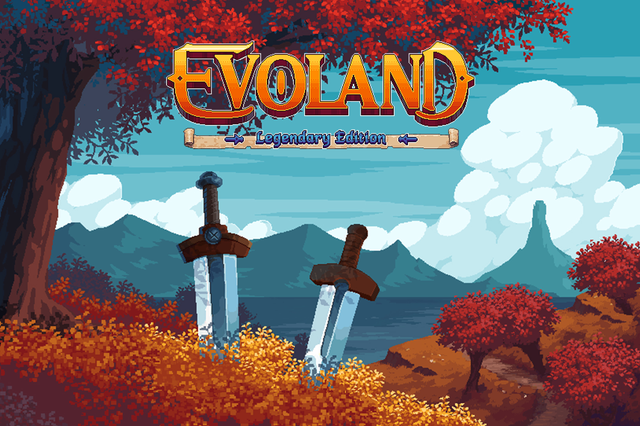

Evoland é um jogo e uma história. A história dos jogos de ação e aventura,
como visto em muitos JRPGs e RPGs de ação populares, começando desde o início,
quando alguns poucos pixels já eram suficientes para nos fazer sonhar por horas.
Você irá descobrir um pouco da história dos videogames e uma jogabilidade muito
divertida, cobrindo 20 anos da história dos jogos de aventura. Inspirado por uma
grande variedade dos RPGs de ação e JRPGs mais populares, Evoland levará você do
monocromático aos gráficos em 3D completos, e de batalhas em tempo ativo até lutas
contra chefes em tempo real, tudo com muito humor e muitas referências a títulos
lendários espalhadas ao longo do jogo.
Jogo simples, bem curto, porem bem divertido, que tem uma ideia muito bacana,
porém nesse primeiro título não aproveitaram ao máximo o potencial, já que tem
três tipos de game play no jogo e acaba ficando muito estranho essa mudança,
deveriam ter focado em uma das 3. É uma boa pedida para quem quer um jogo curtinho
para zerar bem rápido.